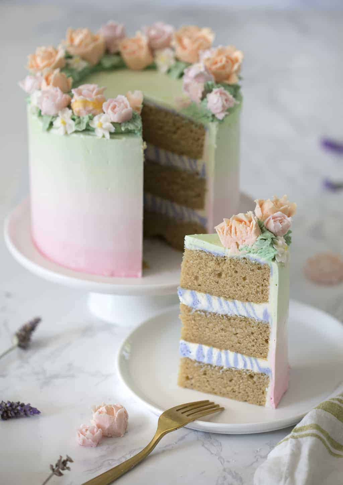

Lavender Cake

Description
Ever wanted the perfect, highly sophisticated, yet relatively easy to assemble cake recipe with
which to blow away your family and friends? This lavender cake recipe combines the wonderful
flavor of culinary lavendar with a delicious Italian buttercream to create the perfect spring
dessert.
Ingredients
For the cake:
- 213g all-purpose flour
- 190g granulated sugar
- 3g baking powder
- 1g baking soda
- 180ml whole milk (room temperature)
- 2 tbsp black vanilla tea (loose)
- 1/2 tsp culinary lavender
- 165g unsalted butter (almost melted)
- 120ml sour cream (room temperature)
- 10g vanilla extract
- 3 egg whites (large, room temperature
For the Italian buttercream:
- 4 egg whites (room temperature)
- 275g granulated sugar
- 1 pinch kosher salt (optional)
- 456g unsalted butter (room temperature)
- 1 tsp vanilla extract
- 1 dash cream of tartar
- 80ml water
- pink and green food coloring
For the American Buttercream:
- 907g confectioners sugar
- 450g unsalted butter
- 1 tbsp vanilla extract
- 1-2 drops lavender essential oil (optional)
- purple and pink food coloring
Instructions
For the cake:
- Preheat oven to 340F. Butter and flour three 6-inch cake
pans. Soak baking strips in water. (If you're making three 8"
layers then double the batter, three 9" layers would need triple
the batter.)
- Sift dry ingredients (including sugar). Whisk to combine.
- In a small saucepan over medium heat, combine milk, culinary
lavender and loose black tea. Give it a quick stir. Let it simmer
for about 10 minutes. Strain into a bowl to cool. Measure ½ cup for
the batter. Reserve the rest for the buttercream.
- In a medium bowl, combine the wet ingredients, including butter and
1/2 cup of the infused milk.
- Combine the wet and dry mixtures. Whisk until combined.
- Add damp baking strips to the cake pans.
- Evenly distribute batter into each of the pans. I like to
use a kitchen scale for precision.
- Bake for about 30-35 minutes or until the centers are set and
springy to the touch.